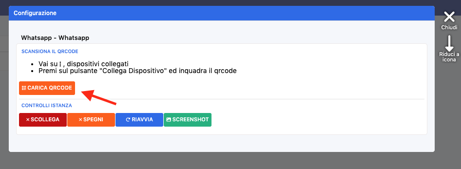

COME COLLEGARE WHATSAPP SE SI E' DISCONNESSO?
Dashboard di Scidoo→a sinistra si apre una tendina in blu, CLICCA su LICENZA→ORDINI EFFETTUATI→CONFIGURA IN BLU→si apre l'interfaccia nella foto→CLICCA SU CARICA QR CODE e inquadralo con il dispositivo da collegare

⚠️NOTA BENE: se la procedura non va a buon fine ritenta nuovamente dopo 10 minuti [potrebbe essere un blocco di WhatsApp temporaneo]
⚠️NOTA BENE: se non vedi in ORIDNI EFFETTUATi il banner di WhatsApp invia una mail a commerciale@scidoo.com per richiederne l'attivazione in quanto è un MODULO A PAGAMENTO